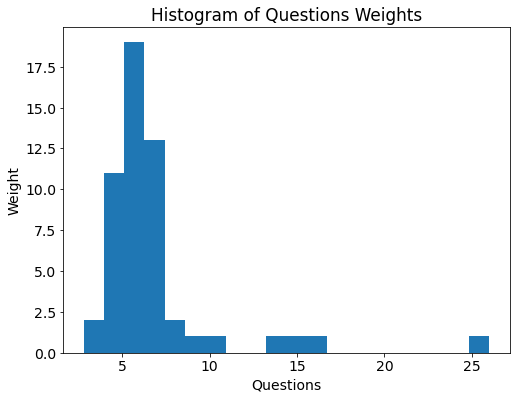
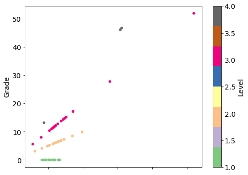
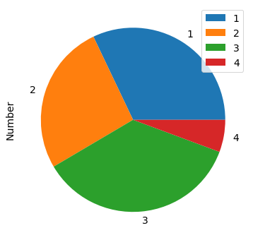
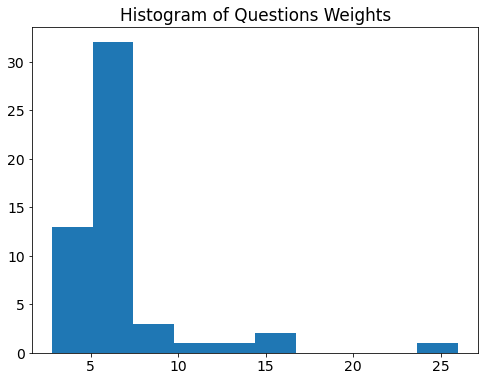
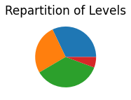

Contents
# import library
import pandas as pd
import matplotlib.pyplot as plt
from myst_nb import glue
# display plot in the notebook
%matplotlib inline
# set figuresize and fontsize
plt.rcParams['figure.figsize'] = (8,6)
plt.rcParams['font.size'] = 14
---------------------------------------------------------------------------
ModuleNotFoundError Traceback (most recent call last)
Input In [1], in <cell line: 2>()
1 # import library
----> 2 import pandas as pd
3 import matplotlib.pyplot as plt
4 from myst_nb import glue
ModuleNotFoundError: No module named 'pandas'
data_cols = ["Number","Recommendation","Audit Question","Weight","Level","Description","Grade"]
datas = pd.read_csv("data/manufactoring_on_board.csv", header=0, names=data_cols, na_filter=False)
glue("data_desciption",datas.head())
| Number | Recommendation | Audit Question | Weight | Level | Description | Grade | |
|---|---|---|---|---|---|---|---|
| 0 | 7 | Procedures related to corrective actions inclu... | What process is used to collect technical even... | 15.4 | 4 | Procedures related to corrective actions inclu... | 46.2 |
| 1 | 8 | Procedures related to preventive actions inclu... | Do procedures related to preventive actions in... | 15.6 | 4 | Procedures for preventive actions do exist. th... | 46.8 |
| 2 | 17 | The subassembly varnishing activity. that must... | Are inspection parameters monitored during the... | 9.9 | 2 | The varnishing activity is monitored by superv... | 9.9 |
| 3 | 18 | Maintenance procedures related to corrective a... | Does corrective maintenance take place as soon... | 6.9 | 2 | Corrective actions are made directly where the... | 6.9 |
| 4 | 19 | Based on the defined preventive maintenance pl... | Is preventive maintenance planned to correct d... | 4.0 | 3 | Real maintenance procedures are implemented fo... | 8.0 |
glue("data_stats",datas.describe())
| Number | Weight | Level | Grade | |
|---|---|---|---|---|
| count | 53.000000 | 53.000000 | 53.000000 | 53.000000 |
| mean | 87.867925 | 6.769811 | 2.150943 | 9.035849 |
| std | 44.831324 | 3.662312 | 0.948607 | 11.463791 |
| min | 7.000000 | 2.800000 | 1.000000 | 0.000000 |
| 25% | 43.000000 | 5.200000 | 1.000000 | 0.000000 |
| 50% | 95.000000 | 5.900000 | 2.000000 | 6.600000 |
| 75% | 126.000000 | 6.700000 | 3.000000 | 12.000000 |
| max | 155.000000 | 26.000000 | 4.000000 | 52.000000 |
count_levels = datas.groupby(['Level']).count()
print(count_levels)
Number Recommendation Audit Question Weight Description Grade
Level
1 17 17 17 17 17 17
2 14 14 14 14 14 14
3 19 19 19 19 19 19
4 3 3 3 3 3 3
fig1 = datas.Weight.plot(kind="hist", bins=20, title="Histogram of Questions Weights")
plt.xlabel("Questions")
plt.ylabel("Weight")
#plt.savefig("plots/plot_weight_hist")
glue("plot_weight_hist", fig1.get_figure(), display=False)

cmap = {1: 'red', 2: 'blue', 3: 'yellow', 4 : 'green'}
fig2 = datas.plot(kind="scatter", x="Weight", y="Grade", c="Level", colormap="Accent");
#plt.savefig("plots/fig_scatter_grade")
glue("fig_scatter_grade", fig2.get_figure(), display=False)

count_level = datas.groupby(['Level']).count()
fig3 = count_level.plot.pie(y="Number")
fig3.get_figure().savefig("plots/fig_level_pie")
glue("fig_level_pie",fig3.get_figure() , display=False)

fig, ax = plt.subplots()
ax.hist(datas.Weight)
ax.set_title("Histogram of Questions Weights")
fig2, ax = plt.subplots(figsize=(6, 2))
ax.pie(count_level['Number'])
ax.set_title("Repartition of Levels")
glue("hist_weights", fig, display=False)
glue("pie_levels", fig2, display=False)


import plotly.express as px
figX = px.scatter(datas, x="Weight", y="Grade", color="Level")
figX
glue("plotly_scattered", figX.get_subplot(), display=False)
import plotly.express as px
df = px.data.iris() # iris is a pandas DataFrame
fig = px.scatter(df, x="sepal_width", y="sepal_length")
fig.show()